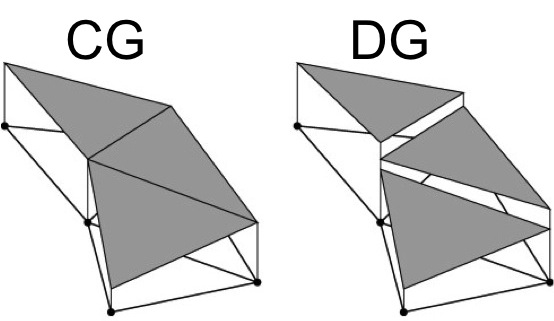

class: center, middle, # .blue[pyblitzdg:] ## .blue[An Open-Source Python 3 Framework for Rapid Numerical Model Development] ## Derek Steinmoeller, B.Math, M.Math, Ph.D. ### Founder/Developer @ Waterloo Quantitative Consulting Group. Developer @ Aquanty Inc. ### @dsteinmo (github/twitter) --- # .blue[Presentation Overview] ### Physical model development: Past and Present. ### DG and CG: Briefly on the theory ### History of numerical models ### pyblitzdg: How and Why --- # .blue[Discontinuous Galerkin (DG) Theory] Consider the general hyperbolic system $$ \frac{\partial \mathbf{Q}}{\partial t} + \frac{\partial \mathbf{F}}{\partial x} + \frac{\partial \mathbf{G}}{\partial y} = \mathbf{0} \;. $$ Suppose the domain \\(\Omega\\) has been subdivided into \\(K\\) elements \\(\Omega_k, k=1,\cdots ,K \\). In the DG method, we take the residual to be orthogonal to the space of test functions \\( \lbrace \ell_j^k \rbrace_1^{N_p}\\), and expand the solution with approximating polynomials taken from the same space. Integration by parts gives: <div class="center"> </div> where the star functions refer to numerical fluxes. --- #.blue[Continuous Galerkin Theory] Similar idea, but test functions are defined over the full domain, $$ \phi_l = \left\lbrace \begin{array}{c} \ell_j^k \quad \mbox{on} \quad \Omega_k , \\\\ 0 \quad \mbox{elsewhere} \end{array} \right. $$ where \\( l= 1, \cdots\, N_{dof} \\) is a global node number. We integrate over the whole domain $$ \int_\Omega \frac{\partial \mathbf{Q}_h}{\partial t} \phi_l - \mathbf{F}_h \frac{\partial \phi_l}{\partial x} - \mathbf{G}_h \frac{\partial \phi_l}{\partial y} \, d\mathbf{x} = \mathbf{0} \;, $$ and the problem is discretized and assembled into a global (sparse) matrix system of ODEs $$ M \frac{d \mathbf{Q}}{d t} - S_x^T \mathbf{F} - S_y^T \mathbf{G} = \mathbf{0} \;. $$ --- # .blue[The ghost of physical models past] * First numerical weather forecast attempts consisted of roomfuls of 'computers' (here a vocation, not a machine) and no data assimilation, during WWI-era. * Dawn of computing sparked ever-lasting love affair between Atmospheric Scientists and Numerical Analysts. <div class="center"> <img src="FortranPunchCard.gif" style="margin:0;" width="100%"/> <small> <br/>(Fortran Punch Card: Early compilers and interpreters read these instead of text files.) </small> </div> * Early (automated) calculations were carried out in Fortran or Assembly. --- # .blue[What are today's models written in?] * FORTRAN! 😢 * Some C/C++. People focus on using low-level things that are efficient. Or use a blackbox which limits scope and accuracy in exchange for robustness. * Constant boiler-plate reproduction, very little incorporation of existing software frameworks or libraries. * **Enter Python**: Wrappers for fast low-level operations in C/C++ and Fortran. High-level flexibility of an OO-scripting language. Ready for adoption for anyone from beginning programmers to seasoned veterans. --- # .blue[pyblitzdg: but why?] * Backend (*blitzdg*) in full C++: Efficient implementation details for Discontinuous Galerkin finite element methods. * 2D elements: Triangles and Quadrilaterals in unstructured meshes. * 3D elements: Roadmapped. * DG and CG support. * Eliminate the years of work to re-implement boiler-plate finite element method (FEM) implementation details for every new model. * A neat-and-tidy FEM Python 3 API with comprehensive docs / API reference and examples: https://wqcg.gitbook.io/pyblitzdg-official-docs/ * `ManyLinux2010`, `Mac OS`, and `Win64` wheel builds available on https://pypi.org/projects/pyblitzdg * `pip[3] install pyblitzdg` * GPLv3 -- Education/Research-friendly license. * Derivative works must also be GPL'd! --- # .blue[pyblitzdg: what does it do again?] <div class="center">  </div> * Finite compute resources mean continuum is approximated discretely! * We increase accuracy on a single triangle with higher-order polynomials. * Linear (N=1) is the traditional FEM. * DG-FEM and CG/SEM (spectral elements) work with arbitrary (but within-reason) N. * DG enforces interelement coupling with numerical finite volume fluxes. * Arbitrary/agnostic geometry is the cornerstone of the full FEM-family. --- # .blue[Prototypical example: Shallow Water Equations in Conservation Form] $$ \mathbf{Q} = \left( \begin{array}{c} h \\\\ hu \\\\ hv \end{array} \right) , \; \mathbf{F} = \left( \begin{array}{c} hu \\\\ hu^2 + \frac{1}{2}gh^2 \\\\ huv \end{array} \right) , \; \mathbf{G} = \left( \begin{array}{c} hv \\\\ huv \\\\ hv^2 + \frac{1}{2}gh^2 \end{array} \right). $$ with source term $$ \mathbf{B} = -gh \left( \begin{array}{c} 0 \\\\ \frac{\partial b}{\partial x} \\\\ \frac{\partial b}{\partial y} \end{array} \right) $$ where \\( z=b(x,y) \\) is the depth profile, and b < 0. --- # .blue[pyblitzdg: Fire it up!] <pre> import pyblitzdg as dg meshManager = dg.MeshManager() meshManager.readMesh('./input/box.msh') # Gmsh input reader N = 1 # Order of polynomials nodes = dg.TriangleNodesProvisioner(N, meshManager) outputter = dg.VtkOutputter(nodes) # Output for Paraview ctx = nodes.dgContext() x = ctx.x # Get Cartesian y = ctx.y # coordinates. # ... </pre> --- # .blue[pyblitzdg: The time-stepping loop] <pre> dt = 0.9*dx/np.max(abs(c)) while t < finalTime: (RHS1,RHS2,RHS3) = sw2dComputeRHS(h, hu, hv, g, H, ctx) h1 = h + 0.5*dt*RHS1 hu1 = hu + 0.5*dt*RHS2 # predictor hv1 = hv + 0.5*dt*RHS3 (RHS1,RHS2,RHS3) = sw2dComputeRHS(h1, hu1, hv1, g, H, ctx) h += dt*RHS1 hu += dt*RHS2 # corrector hv += dt*RHS3 h_max = np.max(np.abs(h)) if h_max > 1e8 or np.isnan(h_max): raise Exception("A numerical instability has occurred.") t += dt step += 1 outputter.writeFieldsToFiles({"eta": h-H, "u": hu/h, "v": hv/h}, step) </pre> --- # .blue[sw2dComputeRHS: What's inside?] * Implementation details depend on the flavour of elements (DG vs. CG). * In general, can rely on NumPy-style matrix-vector operations. * Rough guide (not an implementation. See examples in repo): <pre> def sw2dComputeRHS(h, hu, hv, g, H, ctx): ... # Get required variables from the context. F1 = hu # Define the flux vectors. G1 = hv F2 = (hu*hu)/h + 0.5*g*h*h # 'hu' equation G2 = (hu*hv)/h F3 = G2 # 'hv' equation G3 = (hv*hv)/h + 0.5*g*h*h RHS1 = -(rx * np.dot(Dr, F1) + sx*np.dot(Ds, F1)) + -(ry*np.dot(Dr, G1) + sy*np.dot(Ds, G1)) # Compute RHS2 = -(rx*np.dot(Dr, F2) + sx*np.dot(Ds, F2)) # Divergence + -(ry*np.dot(Dr, G2) + sy*np.dot(Ds, G2)) # of flux. ... return (RHS1, RHS2, RHS3) </pre> --- # .blue[Shallow Water Wave Propagation Into a Harbor] <video class="video-js" controls preload="auto" width="750" height="425" controls data-setup="{}"> <source src="harbor.mp4"> Your browser does not support the video tag. </video> Order = 4, Triangular Mesh (gmsh). Wave height plotted. --- # .blue[Parabolic Problem: Porous Media Flow] Conservation of mass: $$ \frac{\partial p}{\partial t} = - \nabla \cdot \left( c \mathbf{u} \right) $$ Darcy's Law: $$ \mathbf{u} = - \kappa \nabla p \; , $$ Combined gives: $$ \frac{\partial p}{\partial t} = \nabla \cdot \left( K \nabla p \right) \; . $$ i.e., Diffusion equation. --- # .blue[Isotropic Darcian Flow (K=1)] <video class="video-js" controls preload="auto" width="750" height="425" controls data-setup="{}"> <source src="jared_redux.mp4"> Your browser does not support the video tag. </video> Problem setup from J. Penney M.Math thesis -- Diamond mine waste pile problem. Order=4, Triangular Mesh, Interior Penalty Scheme. --- #.blue[Hyperbolic example - Compressible Euler] $$ \mathbf{Q} = \left( \begin{array}{c} \rho \\\\ \rho u \\\\ \rho w \\\\ \rho \theta \end{array} \right) , \; \mathbf{F} = \left( \begin{array}{c} \rho u \\\\ \rho u^2 + p \\\\ \rho uw \\\\ \rho u \theta \end{array} \right) , \; \mathbf{G} = \left( \begin{array}{c} \rho w \\\\ \rho uw \\\\ \rho w^2 + p \\\\ \rho w \theta \end{array} \right). $$ with source term $$ \mathbf{B} = -g \left( \begin{array}{c} 0 \\\\ 0 \\\\ \rho \\\\ 0 \end{array} \right) \;. $$ \\( p \\) is given by the equation of state: $$ p = p_0 \left( \frac{R \rho \theta}{p_0} \right)^{c_p/c_v} \;, \\\\ R = c_p - c_v \quad \mbox{(Gas constant).} $$ --- # .blue[Atmospheric Flow - Disturbance Release] <video class="video-js" controls preload="auto" width="750" height="425" controls data-setup="{}"> <source src="rho_invisc.mp4"> Your browser does not support the video tag. </video> Order=4, Quadrilateral Mesh, Compressible Euler Equations (Potential Temperature Formulation). \\( \rho \\) plotted. --- # .blue[How to do it better?] * Small-scale features likely 'tamed'/kept stable with the element-scale polynomial filter. * Increase order to 8 (enhanced resolution), adjust filtering, introduce dynamic eddy viscosity \\( \mu = 0.1 \; \mbox{Pa} \cdot \mbox{s} \\). <div class="center"> </div> --- # .blue[Compressible Navier-Stokes, N=8] <video class="video-js" controls preload="auto" width="750" height="425" controls data-setup="{}"> <source src="rho_high_visc.mp4"> Your browser does not support the video tag. </video> * Still should add diffusivity parameters. --- # .blue[pyblitzdg: What's next?] * GPU examples (`pycuda`, `cupy`, ...?). * Scalable cluster computations (`mpi4py`). * 3D elements implemented in the C++ layer (with Python API end-points) * Examples for more physical models of interest: Maxwell's and Incompressible Navier-Stokes equations. * Fully interactive and detailed set of docs in GitBook format: * https://wqcg.gitbook.io/pyblitzdg-official-docs/ * pdf also available. * Visit our repository of latest updates and feature tracking: * https://github.com/WQCG/blitzdg * Join our slack for help (https://WQCG.slack.com) * @dsteinmo on Twitter --- # .blue[Thank you!] <div class="center"> <small> <br/>Illustration of domain partitioning with pyblitzdg. </small> </div> <br/> ## .red[Any questions?]